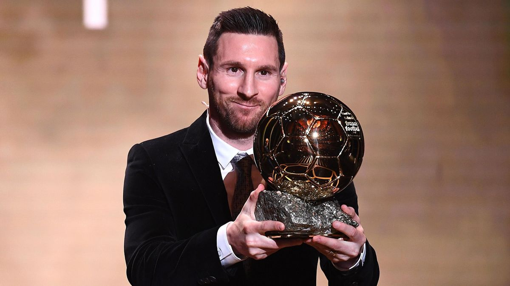
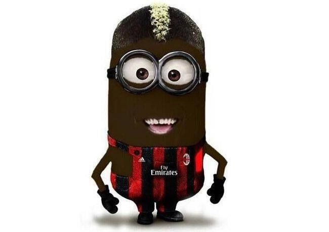
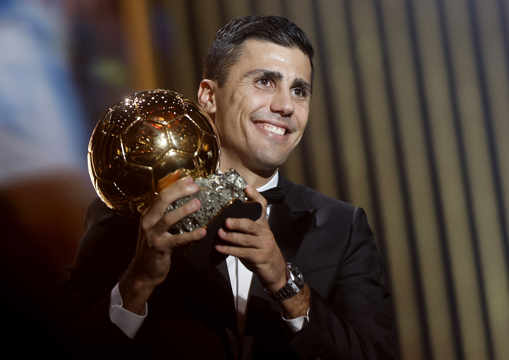
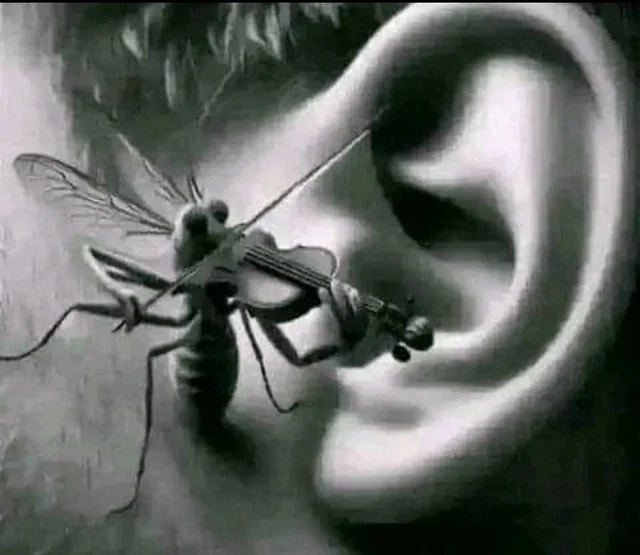

1956 – Stanley Matthews

1957 – Alfredo Di Stéfano

1958 – Raymond Kopa

1959 – Alfredo Di Stéfano
1960 – Luis Suárez

1961 – Omar Sívori

1962 – Josef Masopust

1963 – Lev Yashin

1964 – Denis Law

1965 – Eusébio

1966 – Bobby Charlton

1967 – Flórián Albert

1968 – George Best

1969 – Gianni Rivera

1970 – Gerd Müller

1971 – Johan Cruyff

1972 – Franz Beckenbauer

1973 – Johan Cruyff
1974 – Johan Cruyff
1975 – Oleg Blokhin

1976 – Franz Beckenbauer
1977 – Allan Simonsen

1978 – Kevin Keegan

1979 – Kevin Keegan
1980 – Karl-Heinz Rummenigge

1981 – Karl-Heinz Rummenigge
1982 – Paolo Rossi

1983 – Michel Platini

1984 – Michel Platini
1985 – Michel Platini
1986 – Igor Belanov

1987 – Ruud Gullit

1988 – Marco van Basten

1989 – Marco van Basten
1990 – Lothar Matthäus

1991 – Jean-Pierre Papin

1992 – Marco van Basten
1993 – Roberto Baggio

1994 – Hristo Stoichkov

1995 – George Weah

1996 – Matthias Sammer

1997 – Ronaldo

1998 – Zinedine Zidane

1999 – Rivaldo

2000 – Luis Figo

2001 – Michael Owen

2002 – Ronaldo

2003 – Pavel Nedvěd

2004 – Andriy Shevchenko

2005 – Ronaldinho

2006 – Fabio Cannavaro

2007 – Kaká

2008 – Cristiano Ronaldo

2009 – Lionel Messi

2010 – Lionel Messi
2011 – Lionel Messi
2012 – Lionel Messi
2013 – Cristiano Ronaldo
2014 – Cristiano Ronaldo
2015 – Lionel Messi
2016 – Cristiano Ronaldo
2017 – Cristiano Ronaldo
2018 – Luka Modrić

2019 – Lionel Messi
2021 – Lionel Messi
2022 – Karim Benzema

2023 – Lionel Messi
2024 – Rodri

2025 – Dembélé
